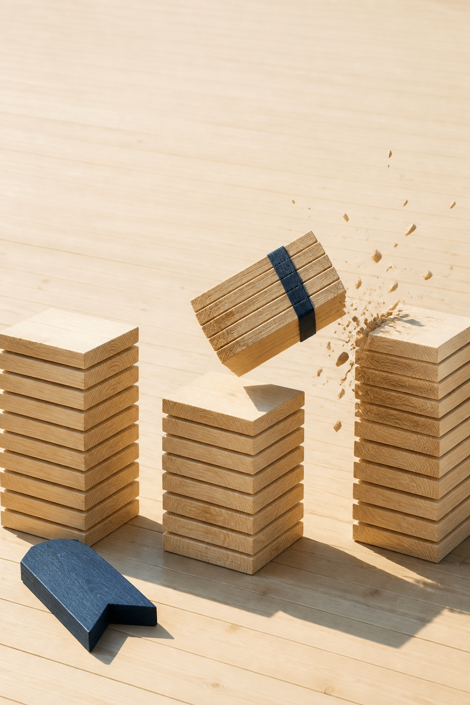

1. 기둥 오른쪽의 네모 손잡이를 잡고 위아래로 끌어요. 선 아래가 묶어 올릴 송판이에요.
2. 빨간 열 장 눈금에 맞춰 놓고 손을 떼면, 열 장 묶음이 왼쪽 자리의 한 장이 돼요. 남는 장은 아홉 장을 넘기면 안 돼요.
3. 일·십·백 세 기둥을 다 잠그면 목표 송판이 격파돼요.
반짝이는 손잡이를 잡고 위아래로 끌어요.
수학 답이 아니라 운영 선택입니다. 둘 다 이득이에요.